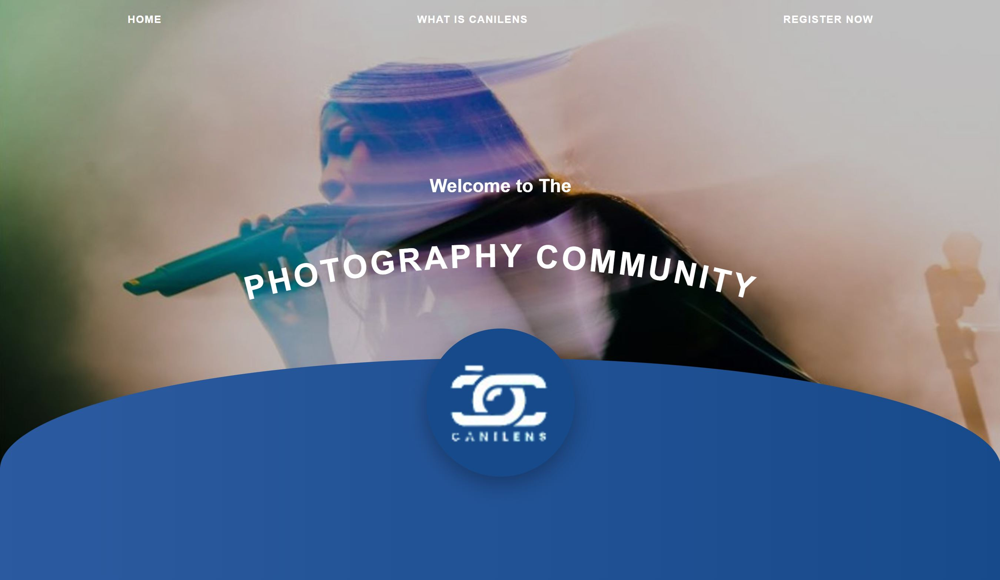
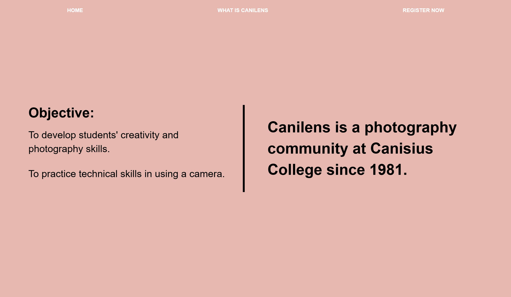
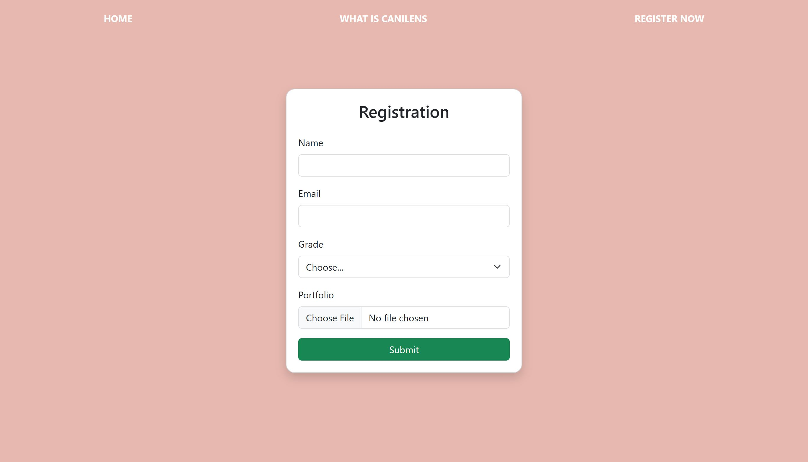

Website fotografi ini dibuat sebagai prototipe apabila Canilens (komunitas fotografi Kolese Kanisius) membutuhkan website untuk menampilkan hasil karya foto dari para anggotanya secara modern dan menarik.


